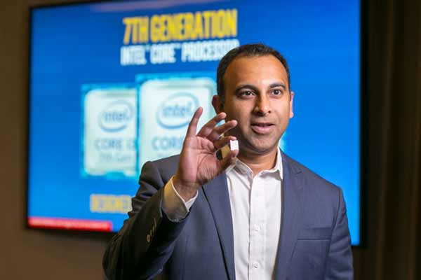
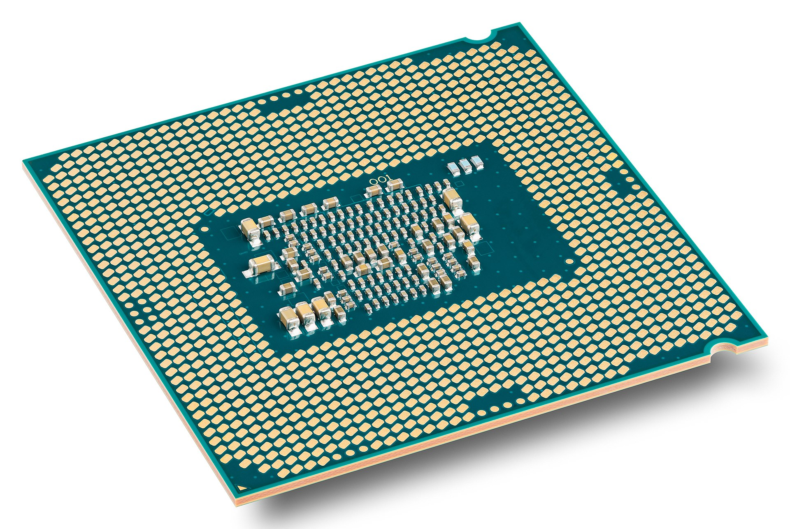

/ Intel /
Intel Core i7
i7 7th
On August 30, 2016, Intel officially released the new seventh-generation Intel Core processor, which uses the latest 14nm process technology and is built on the Skylake microarchitecture. The seventh-generation Intel Core processor focuses on creating the ultimate immersive Internet experience, allowing users to interact with the computer more naturally and intuitively.
|  |  |
Kaby Lake is Intel's codename for its seventh generation Core microprocessor family. Like the preceding Skylake, Kaby Lake is produced using a 14 nanometer manufacturing process technology.Breaking with Intel's previous "tick–tock " manufacturing and design model, Kaby Lake represents the optimized step of the newer process–architecture–optimization model. Kaby Lake began shipping to manufacturers and OEMs in the second quarter of 2016, with its desktop chips officially launched in January 2017. In August 2017, Intel announced Kaby Lake Refresh (Kaby Lake R) marketed as the 8th generation mobile CPUs, breaking the long cycle where architectures matched the corresponding generations of CPUs. Skylake was anticipated to be succeeded by the 10 nanometer Cannon Lake, but it was announced in July 2015 that Cannon Lake had been delayed until the second half of 2017.In the meantime, Intel released a fourth 14 nm generation on October 5, 2017, named Coffee Lake . Cannon Lake would ultimately emerge in 2018, but only a single mobile CPU was released before it was discontinued the following year.
i7 8th
Intel launched its eighth-generation Core processor code-named Coffee Lake in September 2017. It is manufactured using Intel's second 14 nm process node refinement. Desktop Coffee Lake processors introduced i5 and i7 CPUs featuring six cores (along with hyper-threading in the case of the latter) and Core i3 CPUs with four cores and no hyperthreading.
Intel Core i9
i9 7/8th
Intel Core i9 microprocessors were introduced in May 2017 for LGA 2066 chips, also known as Intel Core X-series processors. With their high number of cores, high power draw, high thermal output, and high performance, they are intended to be used by enthusiasts like the earlier Intel Core i7 Extreme Edition processor. At the press conference in April 2018, Intel also brought the Core i9 processor to the mobile platform for the first time, launching the i9-8950HK processor, the highest performance ever in notebooks. This is the only eighth-generation processor in the i9 series. i9-8950HK is the first Intel mobile processor with 6 cores and 12 threads. It is completely unlocked and uses Intel's Thermal Velocity Boost technology, which allows the clock frequency to be automatically increased to a maximum of 200MHz when the processor temperature is low enough and there is room for turbo power. , up to a single core of 4.8GHz.
i9 9th
Faced with AMD Ryzen's increasing pressure, Intel finally officially launched its ninth-generation Core processor in early October to fight back. This time, the flagship of the LGA1151 platform not only used the Core i9 name for the first time, but also upgraded its specifications to 8 cores. With 16 threads and a Turbo frequency of up to 5GHz, The Core i9 brand expanded to include mainstream processors in October 2018, following the launch of the Core i9-9900K processor, which is powered by Intel's mainstream consumer platform.
| Processor branding | Model | Cores (Threads) | CPU Clock Rate | Process |
|---|---|---|---|---|
| Core i7 | i7-7700K | 4 (8) | 4.2 GHz | 14nm |
| i7-7740X | 4 (8) | 4.3 GHz | 14nm | |
| i7-7820X | 8 (16) | 4.3 GHz | 14nm | |
| i7-8700K | 6 (12) | 3.7 GHz | 14nm | |
| i7-9700K | 8 (8) | 3.6 GHz | 14nm | |
| Core i9 | i9-7960X | 16 (32) | 2.8 GHz | 14nm |
| i9-7980XE | 18 (36) | 2.6 GHz | 14nm | |
| i9-8950HK | 6 (12) | 2.9 GHz | 14nm | |
| i9-9900K | 8 (16) | 3.6 GHz | 14nm |
/AMD/
AMD announced a new series of processors on December 13, 2016, named "Ryzen", and delivered them in Q1 2017, the first of several generations. The 1000 series featured up to eight cores and 16 threads, with a +52% instructions per cycle (IPC) increase over their prior CPU products.
The second generation of Ryzen processors, the Ryzen 2000 series, released in April 2018, featured the Zen+ microarchitecture. The aggregate performance increased +10% (of which approximately +3% was IPC and +6% clock frequency). Most importantly, Zen+ fixed the cache and memory latencies that had been major weak points.
AMD Zen is AMD's x86-64 microarchitecture released in mid-2016, succeeding the Bulldozer microarchitecture and its improved version. The Zen microarchitecture has two chips, one is an eight-CPU core chip code-named "Zeppelin", and the other is a four-CPU core + GPU chip code-named "Raven Ridge".
The second-generation Ryzen series, codenamed "Pinnacle Ridge", is an improved version of "Summit Ridge". Except for the Threadripper series, which uses Socket TR4 and supports up to eight-channel memory, they all use the Socket AM4 connection interface and support dual-channel memory.
Ryzen Threadripper
This series uses Socket TR4 socket, supports four-channel memory, and provides up to 64 PCIe channels. This series uses a multi-chip module, code-named "Whitehaven", which actually encapsulates 4 8-core chips code-named "Zeppelin" into the processor on the substrate.
The Threadripper 2000 series was announced at Computex in 2018. It uses Socket TR4 sockets, supports up to four channels of memory, and provides up to 64 PCIe channels. This series uses multi-chip modules, codenamed "Colfax", which is actually a combination of 4 and "Pinnacle Ridge". "The same 8-core chip is packaged on the processor substrate, with a maximum configuration of 32 CPU cores, a base frequency of more than 3.0 GHz, and a maximum TDP of 180W ~ 250W. The boxed version is equipped with up to 14 heat pipes. Large volume radiator. If the motherboard manufacturer provides BIOS firmware updates, the Threadripper 2000 series will also be compatible with existing motherboards using AMD X399 chipsets with sufficient power supply design. However, since the specifications of quad-channel memory are still maintained, the four chips share two of the memory controllers. Applications that require heavy memory access may experience increased access delays.
Ryzen 7
This series uses Socket AM4 socket, codenamed "Summit Ridge", uses a "Zeppelin", fully opens two CCX CPU cores but does not natively have a built-in GPU chip, supports dual-channel memory, and can provide up to 16 PCIe lanes for the graphics card
Ryzen 5
This series uses Socket AM4 socket, and this series is divided into two chip settings. The model without GPU uses a "Zeppelin", turns on some CPU cores in two CCXs, and has a native chip without built-in GPU. It supports dual-channel memory and can provide up to 16 PCIe channels for the graphics card.
Ryzen 3
This series uses Socket AM4 socket. This series is divided into two chip configurations. The GPU-less model uses a "Zeppelin", turns on some CPU cores in two CCXs, and is a native chip without built-in GPU. It does not support simultaneous multi-threading, supports dual-channel memory, and can provide up to 16 PCIe channels for the graphics card.
| Processor branding | Model | Cores (Threads) | CPU Clock Rate | Process |
|---|---|---|---|---|
| Ryzen Threadripper | 1950X | 16 (32) | 3.4 GHz | 14nm |
| 2990WX | 32 (64) | 3.0 GHz | 12nm | |
| Ryzen 7 | 1800X | 8 (16) | 3.6 GHz | 14nm |
| 2700X | 8 (16) | 3.7 GHz | 12nm | |
| Ryzen 5 | 1600X | 6 (12) | 3.6 GHz | 14nm |
| 2600X | 6 (12) | 3.6 GHz | 12nm | |
| Ryzen 3 | 1300X | 4 (4) | 3.5 GHz | 14nm |
| 2300X | 4 (4) | 3.5 GHz | 12nm |
/Process/
From 14nm to 10nm (by 2016)
In semiconductor fabrication, the International Technology Roadmap for Semiconductors (ITRS) defines the 10 nm process as the MOSFET technology node following the 14 nm node. 10 nm class denotes chips made using process technologies between 10 and 20 nm. All production 10 nm processes are based on FinFET (fin field-effect transistor) technology, a type of multi-gate MOSFET technology that is a non-planar evolution of planar silicon CMOS technology. Samsung first started their production of 10 nm-class chips in 2013 for their multi-level cell (MLC) flash memory chips, followed by their SoCs using their 10 nm process in 2016. TSMC began commercial production of 10 nm chips in 2016, and Intel later began production of 10 nm chips in 2018.
From 10nm to 7nm (by 2018)
In semiconductor manufacturing, the International Technology Roadmap for Semiconductors defines the 7 nm process as the MOSFET technology node following the 10 nm node. It is based on FinFET (fin field-effect transistor) technology, a type of multi-gate MOSFET technology. Taiwan Semiconductor Manufacturing Company (TSMC) began production of 256 Mbit SRAM memory chips using a 7 nm process called N7 in June 2016,[1] before Samsung began mass production of their 7 nm process called 7LPP devices in 2018.The first mainstream 7 nm mobile processor intended for mass market use, the Apple A12 Bionic, was released at Apple's September 2018 event. Although Huawei announced its own 7 nm processor before the Apple A12 Bionic, the Kirin 980 on August 31, 2018, the Apple A12 Bionic was released for public, mass market use to consumers before the Kirin 980. Both chips were manufactured by TSMC.